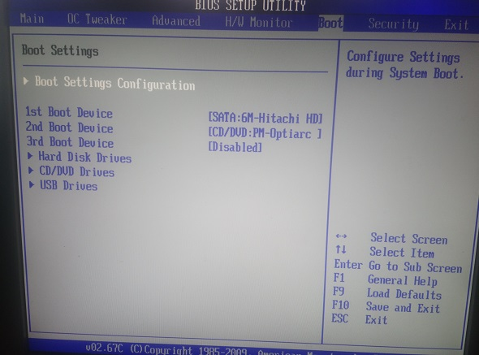

Блог
1
2
3
4
5
6
7
8
H
Спроба зрозуміти як працює операційна система
Для відновлення завантаження операційної системи
Змінюємо налаштування в BIOS на такі, які були до нашого втручання.

Та натискаємо клавішу F10 для збереження змін, виходу з BIOS та перезагрузки.